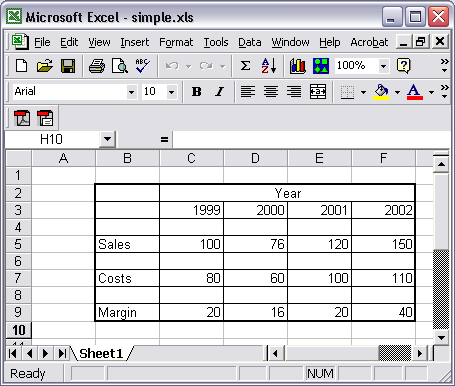

COM methods and properties frequently return null values for which there is no direct equivalent in the APL language. Instead, the system constant ⎕NULL is used to represent a null value.
The following spreadsheet contains a number of empty cells.

Using the Excel.Application COM object, the contents of the spreadsheet can be obtained as follows:
'EX'⎕WC'OLEClient' 'Excel.Application' WB←EX.Workbooks.Open 'simple.xls' WB.Sheets[1].UsedRange.Value2 [Null] [Null] [Null] [Null] [Null] [Null] Year [Null] [Null] [Null] [Null] 1999 2000 2001 2002 [Null] [Null] [Null] [Null] [Null] Sales 100 76 120 150 [Null] [Null] [Null] [Null] [Null] Costs 80 60 100 110 [Null] [Null] [Null] [Null] [Null] Margin 20 16 20 40
To determine which of the cells are filled, you can compare the array with ⎕NULL.
⎕NULL≢¨WB.Sheets[1].UsedRange.Value2 0 0 0 0 0 0 1 0 0 0 0 1 1 1 1 0 0 0 0 0 1 1 1 1 1 0 0 0 0 0 1 1 1 1 1 0 0 0 0 0 1 1 1 1 1
⎕NULL should also set the values of COM properties to null.